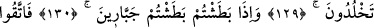

ALLAH’A KARŞI GELMEKTEN
SAKINMAZ MISINIZ?
123. Âd (kavmi) de peygamberleri yalancılıkla suçladı.
124. Kardeşleri Hûd onlara şöyle demişti: (Allah’a karşı gelmekten) sakınmaz
mısınız?
125. Bilin ki, ben size gönderilmiş güvenilir bir elçiyim.
126. Artık Allah’a karşı gelmekten sakının ve bana itaat edin.
127. Buna karşı sizden hiçbir ücret istemiyorum. Benim ecrimi verecek olan,
ancak âlemlerin Rabbidir.
128. Siz her yüksek yere bir alâmet dikerek eğleniyor musunuz?
129. Temelli kalacağınızı umarak sağlam yapılar mı ediniyorsunuz?
130. Yakaladığınız zaman, zorbalar gibi mi yakalıyorsunuz?
131. Artık Allah’tan korkun ve bana itaat edin.
132. Bildiğiniz şeyleri size bol bol veren, Allah’tan korkun.
133. “O size verdi: davarlar, oğullar”.
134. “Bahçeler çeşmeler.” (Allah’a karşı gelmek) den sakının.
135. Doğrusu sizin hakkınızda muazzam bir günün azâbından endişe ediyorum.
136. (Onlar) şöyle dediler: Sen öğüt versen de, vermesen de bizce birdir.
137. Bu, öncekilerin geleneğinden başka bir şey değildir.
138. Biz azâba uğratılacak da değiliz.